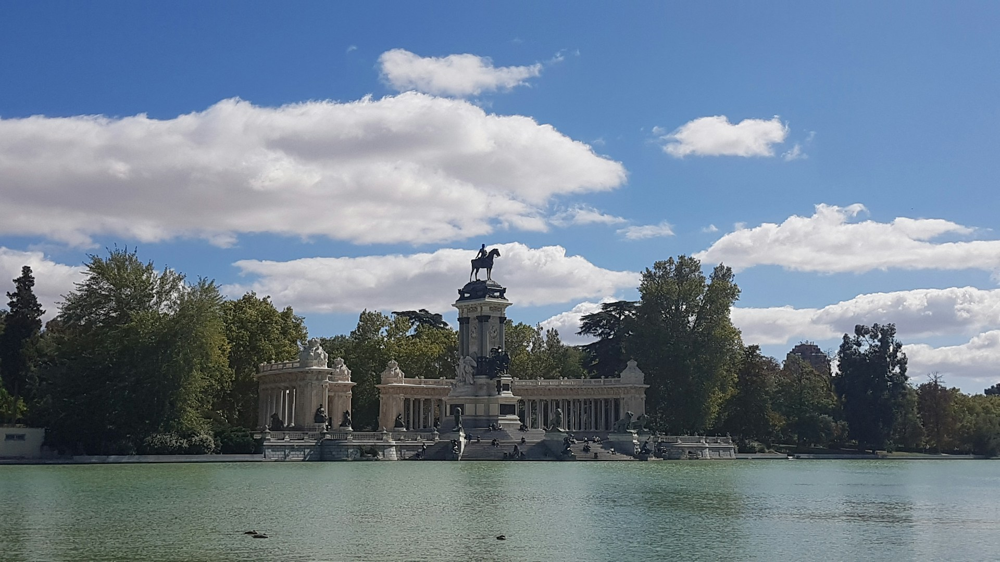
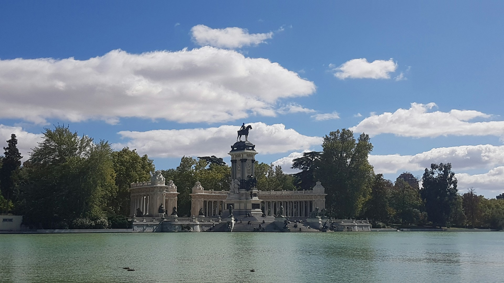
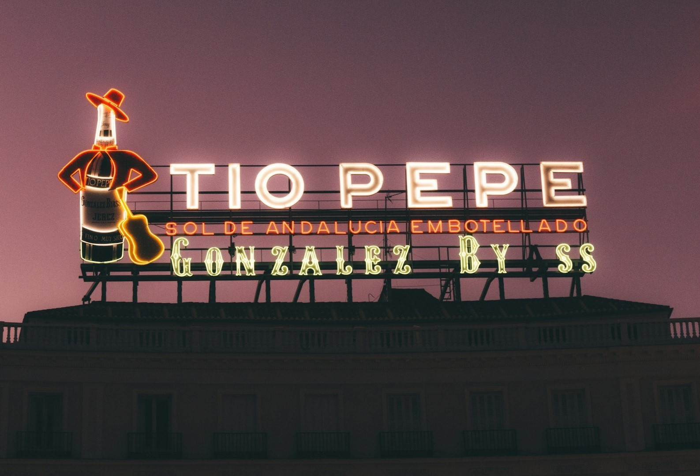
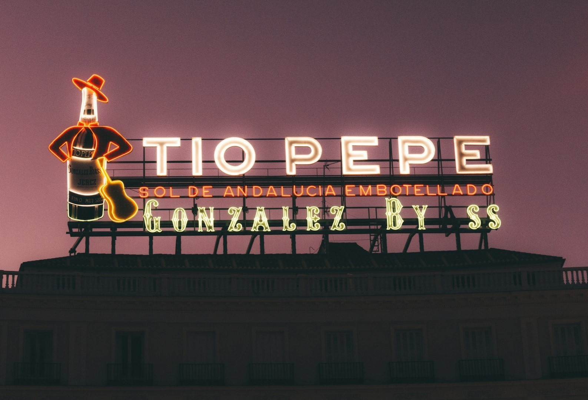

About Madrid
Madrid is a bustling metropolis known for its rich history, stunning
architecture, and lively atmosphere. As the capital of Spain, it
offers a unique blend of tradition and modernity. Step into a world of
passion, art, and vibrant energy in Madrid, Spain – a city that comes
alive in the warmth of spring and summer.
During these months, Madrid comes alive with festivals, outdoor
markets, and al fresco dining. Visitors can explore iconic landmarks
such as the Royal Palace, Plaza Mayor, and Retiro Park.
Imagine strolling through the enchanting streets, where the echoes of
flamenco music mingle with the scent of orange blossoms, and every
corner reveals a new adventure waiting to unfold. In Madrid, the
allure of the Spanish sun beckons you to embrace the outdoors. Take a
leisurely walk through the lush greenery of El Retiro Park, where
blooming gardens and sparkling fountains create an idyllic backdrop
for relaxation and romance.
For a touch of culture, immerse yourself in the world-renowned Prado
Museum, home to masterpieces by Goya, Velázquez, and other artistic
luminaries. Let the artistry of the Spanish Golden Age captivate your
soul and ignite your imagination.
As the day fades into twilight, let the rhythm of Spanish nightlife
enchant you. Indulge in delectable tapas and fine wine at the bustling
Mercado de San Miguel, where the lively atmosphere is as intoxicating
as the flavors. Or surrender to the allure of a sultry flamenco
performance, where the passion of the dance will ignite your senses
and leave you spellbound.
Places to Visit
Madrid boasts a wealth of attractions for tourists, including
world-class museums like the Prado and Reina Sofia, picturesque
neighborhoods like Malasaña and Chueca, and vibrant nightlife in areas
like Gran Vía and La Latina.
And when the heat of the day subsides, surrender to the allure of
Madrid's enchanting rooftop terraces, where panoramic views of the
city and starlit skies create an ambiance of pure romance and
sophistication.
Don't miss the opportunity to sample delicious Spanish cuisine, from
tapas bars to Michelin-starred restaurants. Whether you're a history
buff, art lover, or foodie, Madrid has something for everyone.
Come, let Madrid seduce you with its enchanting blend of history, art,
and passion. Embrace the warmth of the Spanish sun, the vibrant energy
of the streets, and the timeless allure of a city that beckons you to
write your own unforgettable story beneath the azure skies of spring
and summer. Madrid awaits, ready to captivate your heart and awaken
your senses.
 

 
